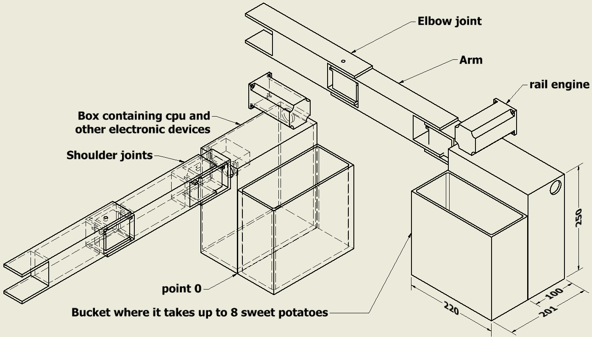
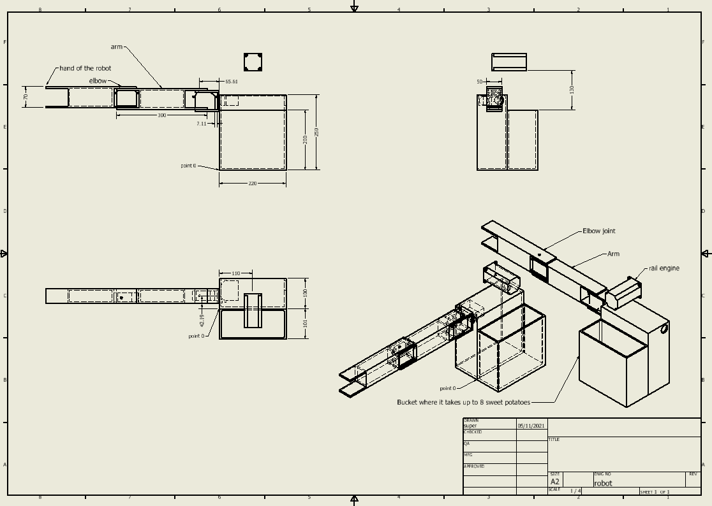

Apresentamos uma máquina do tamanho de um contêiner de transporte de 40 pés que produz alimentos todos os dias.
O que cada máquina faz:
A cada hora, das 9h às 15h, são servidas até 7 batatas-doces assadas quentes por cada máquina, totalizando cerca de 40 por dia.
A batata-doce é o alimento que mais produz carboidratos por metro quadrado.
Sobre as máquinas:
As máquinas são fundamentalmente estufas de alto desempenho, com 30 metros quadrados e 4 andares, perfazendo um total de 120 metros quadrados de cultura, com cultivo de batata-doce. Cada máquina possui um robô dentro que rega, planta e colhe a batata-doce em um tempo preciso. O robô colhe uma fileira de dez plantas a cada dia, plantando novas no mesmo local.
O robô leva as batatas-doces colhidas ao forno colocado na frente da máquina e as assa durante o dia, a partir das 9h00, depois a cada hora o robô tira as batatas-doces assadas e coloca outro conjunto de até 7 no forno, 6 vezes, 6 horas assando batata-doce, assando toda a batata-doce colhida do dia até cerca das 15: 00h.
A energia vem de painéis solares e de uma turbina eólica que são colocadas no teto do contêiner, após o estacionamento do mesmo.
Método para acabar com a fome:
As máquinas funcionam bem se estiverem espalhadas o mais próximo possível das tribos, elas são deixadas onde um semirreboque pode ir.
Cada máquina é transportada apenas uma vez para o local, que produz uma quantidade mínima de alimentos para 20 pessoas todos os dias.
Cada máquina é adequada para locais com mudanças climáticas, pois pode suportar até 8 meses de seca.
Esse método não depende apenas de doações.
Tem sustentabilidade rentável, pois essas máquinas também estarão no mundo civilizado vendendo cada batata-doce assada por cerca de 70 centavos, e as pessoas estão cientes do carisma desse projeto que vai salvar muitos inocentes da fome, onde não há comida, com máquinas distribuídas em locais estratégicos, onde há gente sem nada para comer, distribuindo ali batata-doce assada de graça.
Sustentabilidade:
Cada milhão de dólares salva uma multidão de mil pessoas inocentes de morrer de fome com este projeto.
A sustentabilidade calculada torna o investimento mais rentável, salvando mais pessoas inocentes.
Com o crescimento do projeto, em 27 anos o custo para salvar 1 pessoa inocente é de 1 dólar. Do seguinte modo:
O que precisamos para avançar:
Dica para WFP:
Dica para elon musk:
Salve uma multidão de 6 milhões de pessoas inocentes com 6 bilhões de dólares com este projeto.
Status atual de desenvolvimento:
O robô está em desenvolvimento, o software, o código e os desenhos estão disponíveis em https://github.com/vivision1/robot .
O software do robô roda em linux, mas temos compilado para windows e pode ser baixado aqui .
Robot:

Cada um desses robôs salva vinte vidas inocentes.
Desenho de montagem do robô:
